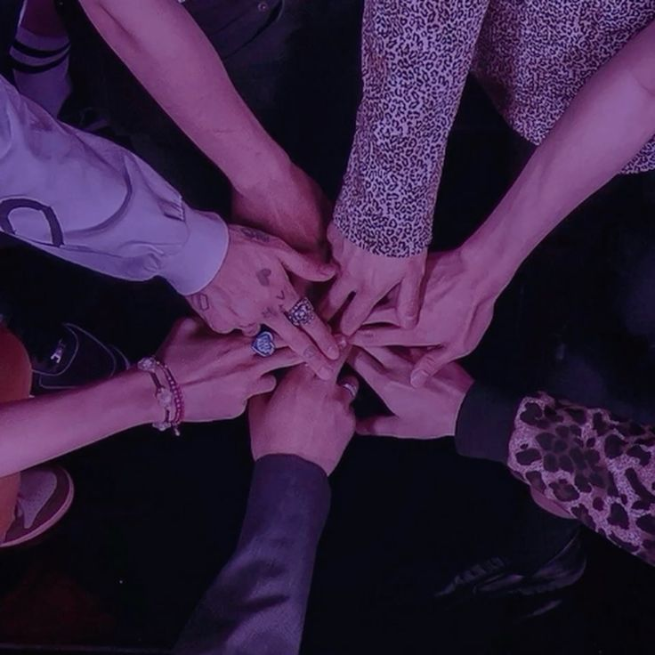
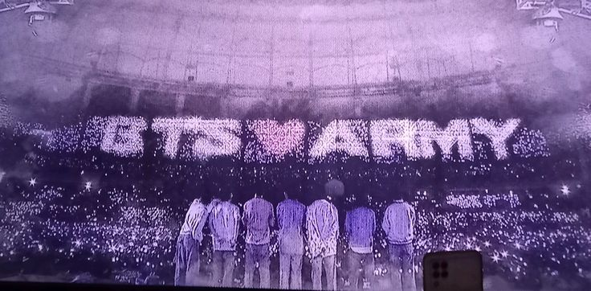

Members
Unofficial fan site · made by ARMY
Explore the seven members, the albums, the story so far, and test how well you know BTS. Welcome to our little corner of the ARMY.

SAVE THE DATE
Every June 13, ARMY celebrates the day seven dreams became one story.
FIND YOUR WAY IN
Every era has a story. Every song holds a memory.



